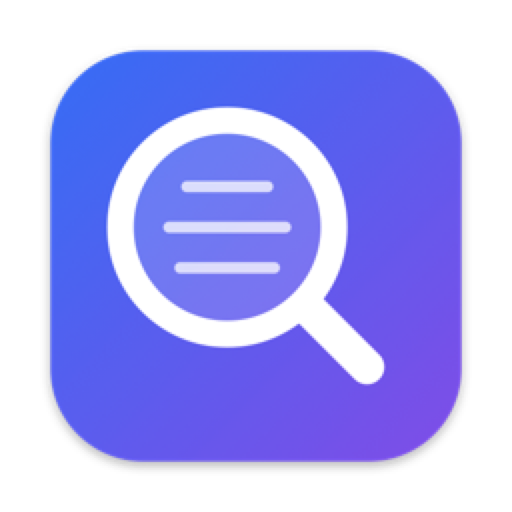
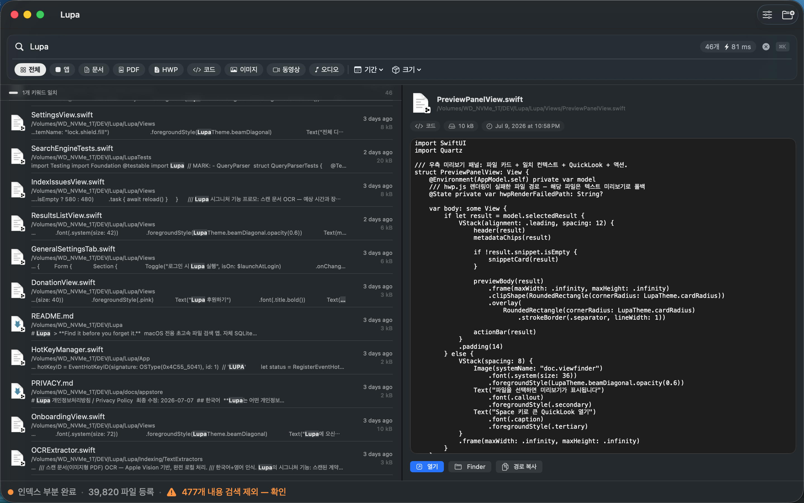
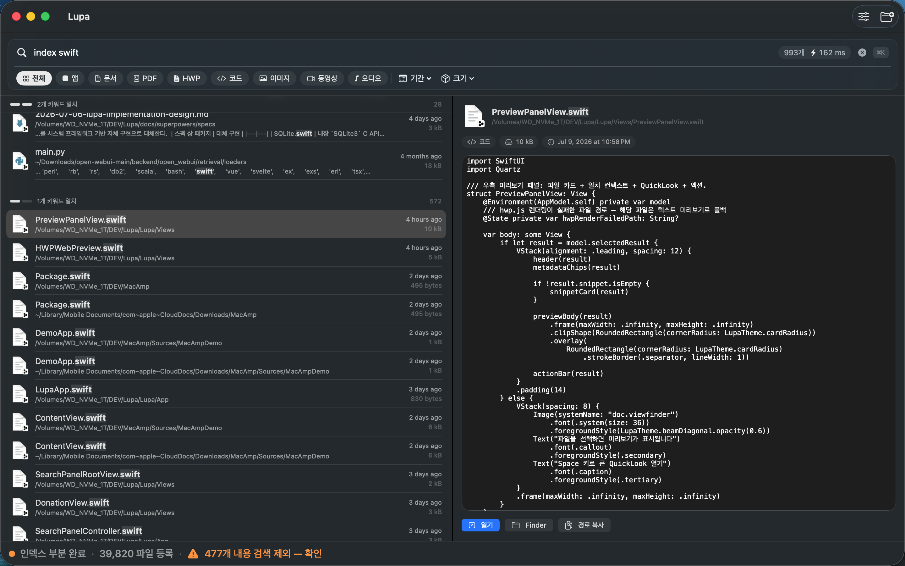

파일명, 문서 속 단어, 폴더, 날짜 — 생각나는 조각을 아무거나 던지세요. 한글(HWP) 문서 내용까지, 전부 이 Mac 안에서만.
Lupa는 커맨드라인(CLI)을 내장합니다. Claude·Hermes 같은 AI 에이전트가 여러분의 자연어를 Lupa 검색어로 바꿔, 수십만 개 파일을 수십 밀리초에 뒤집니다. 물론 전부 이 Mac 안에서만.
lupa-search "f:심사보고서 c:경영검토"에이전트에게 그냥 find로 시키면 느리고 파일명만 훑습니다. Lupa CLI는 미리 인덱싱된 DB를 씁니다.
| 항목 | Lupa CLI | 그냥 에이전트에 맡길 때 (find 기반) |
|---|---|---|
| 검색 속도 | 19ms 초고속 | 2,348ms 약 124× 느림 |
| 방식 | SQLite FTS5 사전 인덱스 | 실시간 파일시스템 스캔 |
| 내용 검색 | ✓ 본문까지 — HWP·PDF·DOCX | ✗ 파일명만 |
| 한글 지원 | ✓ 2-gram · 조사 자동 처리 | △ 조사 처리 안 됨 |
| 정확도 | 매우 높음 (FTS5 랭킹) | 기본 grep |
| 프라이버시 | 완전 로컬 · 네트워크 0 | 로컬 (느림) |
lupa-file-searchClaude · Hermes 스킬이 스킬만 설치하면 "심사보고서에서 경영검토 찾아줘" 같은 자연어를 에이전트가 곧바로 Lupa 검색으로 실행하고, 결과를 표로 정리해 줍니다. Lupa가 없으면 App Store 설치 링크로 안내하고, 폴더가 인덱싱 안 됐으면 알려줍니다.
Lupa는 사용자가 선택한 폴더만 읽습니다 (macOS 샌드박스). 검색할 위치만 등록하면 됩니다.
처음 실행하면 폴더 선택 화면이 뜹니다. ‘홈 폴더 전체 검색’을 누르면 문서·다운로드·바탕화면이 한 번에 등록됩니다.
홈 폴더 검색은 iCloud Drive와 외장 디스크를 포함하지 않습니다. 설정(⌘,) → 폴더 → 빠른 추가에서 버튼 한 번으로 등록하세요.
보안상 각 위치를 처음 추가할 때 시스템이 “허용”을 한 번 물어봅니다. 빠른 추가 버튼이 그 위치로 바로 이동된 창을 열어줘서 클릭 한 번이면 됩니다.
백그라운드에서 파일을 미리 읽어둡니다. ⌥Space를 누르고 기억나는 조각을 입력하세요 — 아래 레시피처럼.
앱을 업데이트해도 인덱스는 그대로 유지됩니다. 새 버전을 받았다고 처음부터 다시 훑는 일은 없습니다. 등록한 폴더와 설정도 함께 남고, 이후로는 새로 생기거나 수정된 파일만 자동으로 따라잡습니다.
우리가 실제로 기억하는 건 파일명이 아니라 조각들입니다. Lupa는 그 조각을 그대로 검색어로 받습니다.

macOS의 Spotlight·QuickLook은 HWP를 열지 못합니다. Lupa는 자체 렌더러를 내장해 한컴오피스 없이 본문을 검색하고, 표·서식이 살아있는 페이지로 미리 봅니다.

전부 조합할 수 있습니다. 조건이 많을수록 결과는 정확해집니다. 한글 접두사도 동일하게 동작합니다.
| 문법 | 기능 |
|---|---|
단어1 단어2 | 조각 여러 개 — 많이 일치할수록 상위 그룹 |
n:단어 파일:단어 | 파일명에서만 |
c:단어 내용:단어 | 문서 내용에서만 |
-단어 | 제외 (이름·내용 모두) |
"정확한 문구" | 조사 처리 없이 그대로 일치 |
f:폴더 폴더:이름 | 경로 범위 (여러 개면 AND) |
.hwp *.mp3 계약* | 확장자 · 와일드카드 |
종류:문서 크기:>10mb 날짜:이번주 | 종류 · 크기 · 수정일 |
Lupa는 네트워크에 접근하는 코드 자체가 없습니다.
인덱싱·검색·OCR·HWP 렌더링 전부 이 Mac 안에서만 처리됩니다.
어떤 정보도 밖으로 전송하지 않습니다. App Store 개인정보 라벨: "데이터가 수집되지 않음".
macOS 샌드박스 안에서, 사용자가 직접 등록한 폴더에만 접근합니다.
Find it before you forget it
App Store에서 받기 — 무료